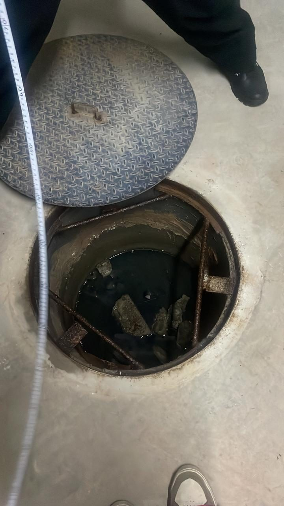

Para que serve a caixa de gordura
Ela recebe a água da pia da cozinha e prende parte da gordura, impedindo que o material endureça dentro dos canos. Existe em casas, restaurantes, lanchonetes, condomínios e outros estabelecimentos que preparam alimentos.
Sinais de caixa cheia ou entupida
- Pia da cozinha descendo devagar ou com água parada.
- Mau cheiro perto da caixa ou da pia.
- Gordura acumulada na superfície ao abrir a tampa.
- Presença de baratas e outros insetos na região.
Cada cozinha tem o seu ritmo
A frequência de limpeza depende do volume de uso. Em cozinhas comerciais, em que se frita e se lava muita louça por dia, a gordura se acumula bem mais rápido que numa casa. Em condomínios, a caixa coletiva recebe a contribuição de várias unidades.
Se você não sabe onde fica a sua caixa de gordura, descreva o local ao entrar em contato e orientamos o que for possível.
Como a Rota Livre atende
Avaliamos a situação, explicamos o que será feito e o orçamento antes de executar, e deixamos o local limpo depois do serviço. O atendimento é feito em residências, comércios, empresas e condomínios.
Dúvidas frequentes
Restaurante pode ser atendido fora do expediente?
Sim. O atendimento é 24 horas, o que ajuda a resolver sem atrapalhar o funcionamento.
Como evitar que a caixa de gordura encha rápido?
Evite jogar óleo na pia, retire restos de comida da louça antes de lavar e use peneira no ralo da cozinha.
Atendem caixa de gordura de condomínio?
Sim. Atendemos condomínios, residências e estabelecimentos comerciais.